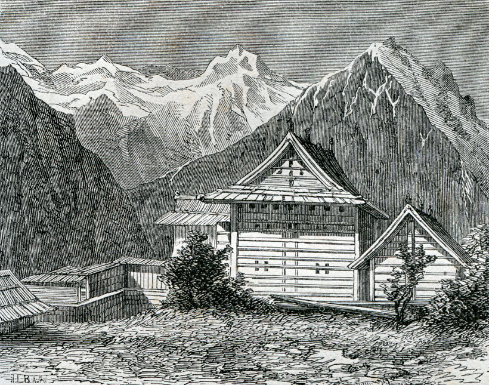
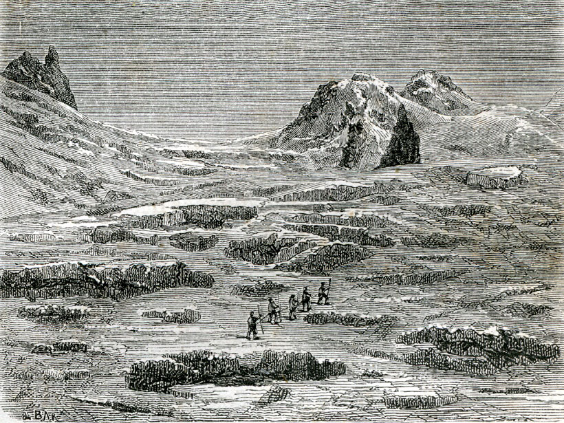
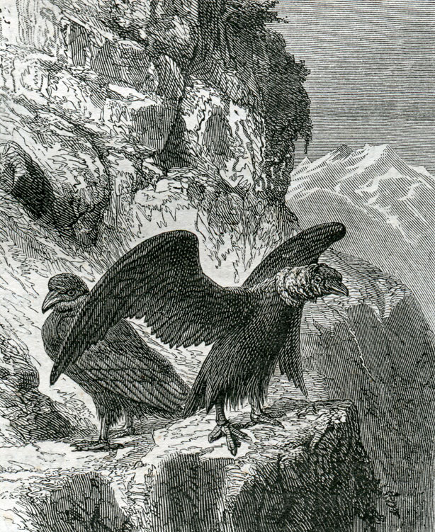
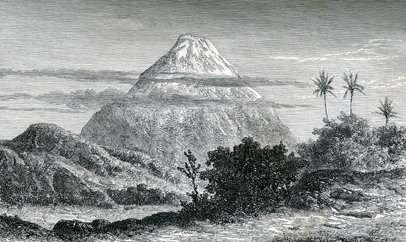
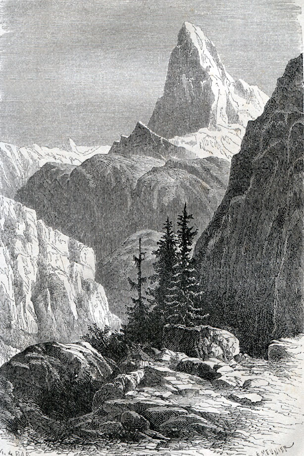
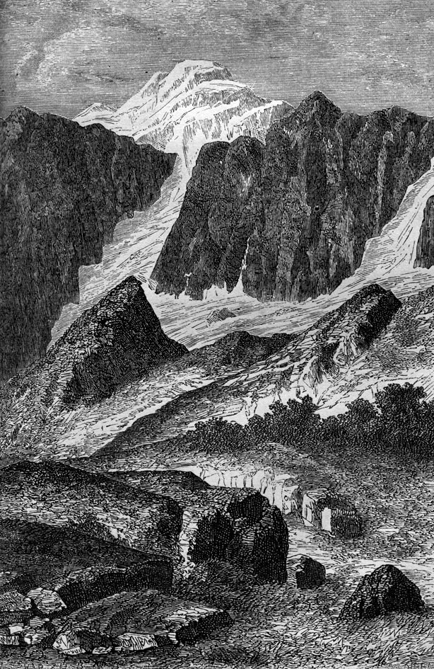
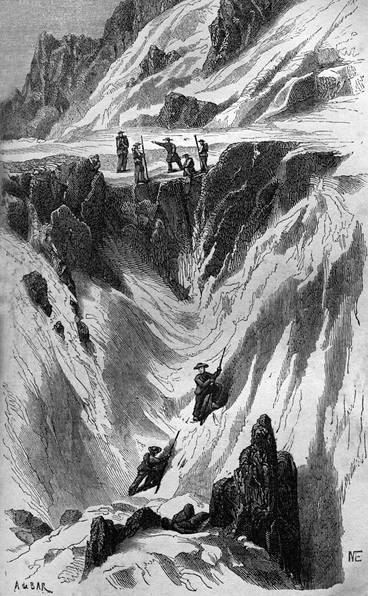
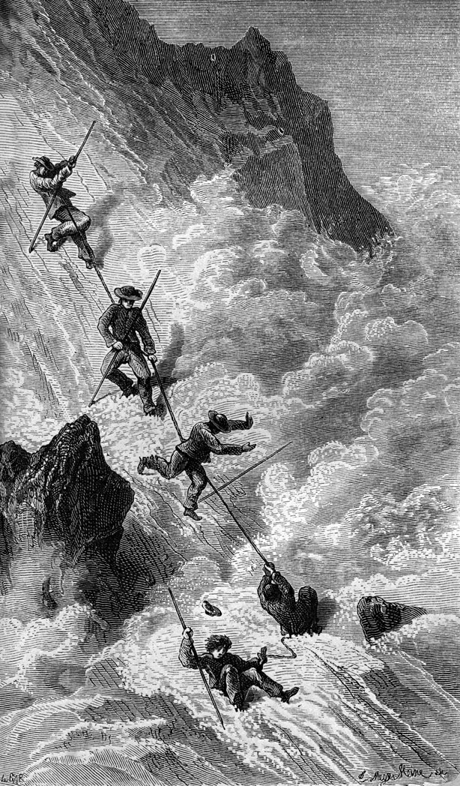
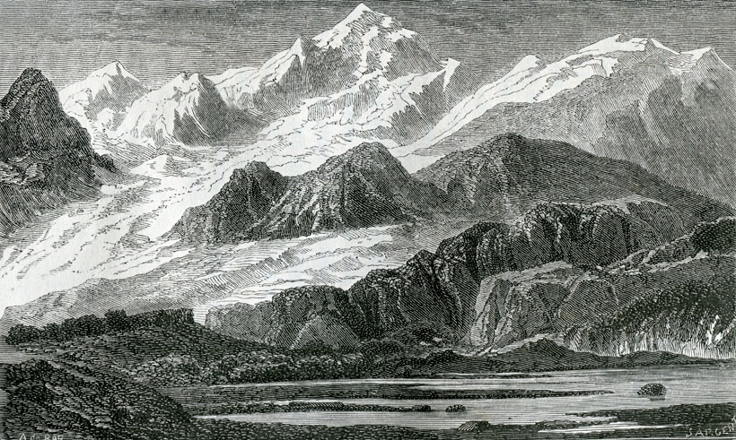

- Volver a
- Inicio
- Revista Digital
- Libros
Ascensiones Célebres
AUTORES: Zurcher Y Margolle
EDITORIAL: Hachette y Cia, Paris.
AÑO: Edición de 1868
FORMATO: 11 x 18 cm.
PAGINAS: 396
IDIOMA: Castellano
OBSERVACIONES: Volumen de la Biblioteca de las Maravillas, publicada bajo la dirección de Eduardo Charton, que contiene narraciones de distintos autores de ascensiones (ver índice) al Himalaya, Pirineos, Cabo Norte, Tenerife, los Andes, los Alpes y otros, acompañan estos relatos 38 ilustraciones de hermosos grabados.
Restauración Fotográfica: Centro Cultural Argentino de Montaña, Natalia Fernández Juárez

Tapa del libro Ascensiones Célebres. Autores: Zurcher Y Margolle
Capítulo 3: Ascensión al Chimborazo
BOUSSINGAULT, del libro: Viajes á los volcanes del Ecuador.
Terraplén de Riobamba. — Formación de las nubes. — Fatigas de la ascensión. — Avalanchas de piedras. — El silencio. — Pasos peligrosos. — El infierno de hielo. — Enrarecimiento del aire. — El coronel Hall.
Riobamba es quizá el diorama más singular del universo. La ciudad no tiene nada de particular en sí, y se halla colocada sobre una de las áridas mesetas tan comunes en los Andes, y que todas, á semejante altura, presentan un aspecto de invierno característico, que imprime en el viajero cierta sensación de tristeza. Puede consistir quizá en que para llegar allí se pasa por los sitios más pintorescos ; y siempre causa tristeza cambiar el clima de los trópicos por las escarchas del norteo.

En el Himalaya, Grabado. Libro: Ascenciones Celebres
Desde la casa que habitaba podía distinguir el Gapac Urcu, el Tunguraña, el Cubillé, el Carguairazo y por último, el Chimborazo al norte : además de diferentes montañas célebres de los Páramos, que sin verse honradas con las eternas nieves, no por eso son menos dignas de la atención del geólogo.
Ese vasto anfiteatro que el horizonte de Riobamba limita por do quiera, es asunto continuo de observaciones varias. Curioso es el observar el aspecto de esos ventisqueros en las diferentes horas del día, y el ver variar á cada momento su altura aparente por efecto de las refracciones atmosféricas. ¿Y con qué interés también no se ven producir en un espacio tan ceñido todos los grandes fenómenos de la meteorología? Aquí es una de esas nubes, inmensamente anchas, que Saussure ha clasificado tan oportunamente con el nombre de nubes parásitas, que va á unirse á la parte media de un cono de traquito, al que se adhiere de tal modo, que el viento que sopla con fuerza no ejerce influencia alguna sobre ella. Bien pronto la tormenta estalla en medio de aquella masa de vapor; granizo y lluvias mezclados inundan el pié de la montaña, mientras que su nevaba cúspide, que no ha podido alcanzar la tormenta, está vivamente alumbrada por el sol. Mas lejos, es una levantada cima de nieve resplandeciente de luz, dibujándose distintamente sobre el azul del cielo y que deja ver perfectamente todos los contornos y accidentes: la atmósfera es de una pureza notable, y sin embargo esa cúspide de nieve se cubre de una nube que parece emanar de su seno; se hubiera creído que salía humo, y más tarde no ofrece sino un ligero vapor que desaparece bien pronto, aunque no tarda en volver á presentarse para desaparecer de nuevo. Esta formación intermitente de las nubes es muy frecuente sobre las cúspides de las montañas cubiertas de nieve: se observa principalmente cuando los tiempos son serenos, siempre algunas horas después de la culminación del sol. En estas condiciones los ventisqueros pueden compararse á condensadores lanzados hacia las altas regiones de la atmósfera, para secar el aire refrescándole y atraer así á la superficie de la tierra el agua que allí se halla contenida en estado de vapor.
Esos terraplenes rodeados de ventisqueros presentan algunas veces el aspecto más lúgubre, cuando un viento sostenido lleva allí el aire húmedo de las regiones calientes. Las montañas se hacen invisibles, el horizonte está cubierto por una línea de nubes que parecen tocar la tierra. El día es frió y húmedo, siendo esa masa de vapor casi impenetrable á la luz solar. Es un largo crepúsculo, el solo que se conoce entre los trópicos, pues bajo la zona ecuatorial la noche sucede súbitamente al día y no parece sino que el sol muere al ponerse.
No podía terminar, mejor mis investigaciones sobre los traquitos de las Cordilleras que por un estudio especial del Chimborazo; para estudiarlo, bastaba en verdad, el aproximarse á su base; pero lo que me hizo pasar el límite de las nieves y determinó mi ascensión, fue la esperanza de obtener la temperatura media de una estación sumamente elevada. Y bien que tal esperanza haya salido frustrada, espero que mi excursión no dejará sin embargo de presentar alguna utilidad á la ciencia.

El cuello del Gigante, Grabado. Libro: Ascenciones Celebres
Mi amigo el coronel Hall, que me había ya acompañado por el Antisana y el Cotopaxi, quiso aun venir conmigo en aquella expedición, á fin de aumentar los numerosos datos que poseía ya sobre la topografía de la provincia de Quito, y continuar sus investigaciones sobre la geografía de las plantas.
Desde Riobamba, el Chimborazo presenta dos cuestas de una inclinación muy diferente. Una de ellas, la que mira al Arenal, es muy escarpada y se ve salir bajo la nieve numerosos picos de traquite. La otra que desciende hacia el sitio llamado Chillapullu, no lejos de Mocha, es poco inclinada, pero en cambio de una extensión considerable. Después de haber examinado bien los alrededores de la montaña, nos resolvimos a emprenderla por aquella cuesta. El 14 de diciembre de 1831, fuimos á hospedarnos a la alquería del Chimborazo, donde hallamos para acostarnos paja fresca y algunas pieles de carnero para librarnos del frió. La alquería se halla á 3,800 metros de altura. Allí las noches son frescas y la estancia es tanto más desagradable cuanto que la leña escasea muchísimo: nos hallábamos ya en esa región de gramíneas que se atraviesa antes de llegar al límite de las nubes perpetuas, y que es donde acaba la vegetación leñosa.
El 15, á las siete de la mañana, nos pusimos en marcha guiados por un indio de la alquería. Seguimos, subiéndole, un arroyo encajonado entre dos muros de traquito y cuyas aguas desembocan en la nevera: no tardamos en separarnos de aquella grieta para dirigirnos hacia Mocha, siguiendo á lo largo de la base del Chimborazo. Subimos insensiblemente : nuestras mulas caminaban con fatiga y trabajo, por en medio de los desechos de rocas que se hallan acumulados al pié de la montaña. La cuesta se hizo muy rápida ; el suelo estaba completamente cubierto y las mulas se detenían casi á cada paso, haciendo un pequeño alto: no obedecían á la espuela, su respiración era precipitada y anhelante. No hallábamos á la sazón á la altura del monte Blanco, pues el barómetro indicaba una elevación de 4,808 metros sobre el nivel del mar.
Después de habernos cubierto el rostro con caretas de tafetán poco espeso, á fin de preservarnos de los accidentes que experimentamos en el Anlisana, empezamos á trepar una arista que conduce á un punto del ventisquero algo elevado. Eran las doce de la noche. Subíamos pausadamente, y á medida que penetrábamos en la nieve, la dificultad de respirar caminando se hacía notar cada vez más: recuperamos sobradamente nuestras fuerzas, deteniéndonos, aunque sin sentarnos, á cada ocho ó diez pasos. Continuando en nuestra subida, experimentamos una gran fatiga á causa de que el suelo nevado presentaba poquísima consistencia, hundiéndose sin cesar bajo nuestros pasos, y en el que nos metíamos algunas veces hasta la cintura. A pesar de todos nuestros esfuerzos, bien pronto nos convencimos de la imposibilidad de adelantar, y, con efecto, un poco más allá de la nieve habitada, había mas de 4 pies de profundidad. Fuimos á descansar sobre un trozo de traquito que se asemejaba á una isla en medio de un mar de nieve. La altura observada era de 5,115 metros ; de modo que después de muchísimas fatigas, habíamos subido solamente 307 metros sobre el punto en que echáramos pié á tierra.

El Condor, Grabado. Libro: Ascenciones Celebres
A las seis nos hallábamos de vuelta en la alquería: el tiempo había sido magnífico, y nunca nos pareció más majestuoso el Chimborazo; pero después de nuestra infructuosa caminata no podíamos mirarlo sin experimentar una sensación de despecho. Resolvimos intentar la subida por el lado silvestre, es decir, por la cuesta que cae hacia el Arenal, lado por el que sabíamos que el Sr. Humboldt había ascendido hasta aquella montaña. En Riobamba se nos enseñó perfectamente el punto hasta donde había podido llegar, pero imposible nos fué el obtener informes precisos sobre el camino que pudiera haber seguido para subir allí. Los indios que le acompañaron en aquel intrépido viaje no existían.
A las siete del día siguiente tomamos el camino del Arenal: el cielo ostentaba una pureza notable. Al este distinguíamos el famoso volcán de Sangay, situado en la provincia de Macas, y que la Condamine vio casi un siglo antes en un estado de incandescencia permanente. A medida que adelantábamos, el terreno se levantaba de un modo visible. En general los terraplenes traquíficos que sostienen los picos aislados de que están como erizados los Andes, se elevan poco á poco hacia la base de dichos picos. Las numerosas y profundas grietas que surcan aquel terraplén parecen salir todas de un centro común y se estrechan á medida que se alejan de ese centro. La comparación más exacta que se puede hacer de ellas es que se parecen al tallado que se ve en un vidrio estrellado.
Nos hallábamos á 4,945 metros de elevación, cuando echamos pié á tierra, á causa de que el terreno se hacía imposible para las mulas, que, por otra parte le trataban de darnos á entender con su instinto verdaderamente extraordinario el cansancio que experimentaban: sus orejas tan tiesas y atentas de costumbre, se hallaban completamente abatidas, y durante los frecuentes altos que hacían para respirar no cesaban de mirar hacia el llano. Pocos jinetes han conducido probablemente su cabalgadura a una elevación semejante; y para llegar montados sobre las mulas, en un suelo movedizo, más allá del límite de las nieves, hubiera sido preciso haber practicado la equitación varios años en los Andes.
Después de examinar el punto en que nos hallábamos colocados, reconocimos que para ganar una arista que subía hacia la cúspide del Chimborazo, debíamos antes trepar una cuesta excesivamente rápida que teníamos ante nosotros. Componíase en gran parte de pedazos de rocas de todos tamaños dispuestos en talud, que aquí y allá estaban cubiertos por sábanas de nieves mas ó menos extendidas, y sobre varios puntos podía distinguirse claramente que aquellos despojos de nieve endurecida, provenían, por consiguiente, de los recientes hundimientos acaecidos en la parte superior de la montaña. Esos hundimientos son frecuentes, y lo que más debe temerse, en medio de los ventisqueros de las Cordilleras, son las avalanchas en las que realmente entran mas piedras que nieve.

El Chimborazo, Grabado. Libro: Ascenciones Celebres
A las once acabamos de atravesar una sábana de hielo bastante extendida, en la que nos fué preciso dar cortes para asegurar nuestros pasos. No habíamos hecho esto sin peligro: una resbaladura nos hubiera costado la vida. Entramos de nuevo sobre los despojos de traquito que para nosotros era la tierra firme, y desde entonces pudimos subir con mayor rapidez. Caminábamos en hilera, yo primero, después el coronel Hall y en seguida venia mi negro que seguía exactamente mis pasos, á fin de no comprometer la seguridad de los instrumentos que custodiaba. Guardamos un religioso silencio durante el camino, habiéndome enseñado la experiencia que no hay nada que atenúe tanto á semejantes alturas como una conversación tirada, y si cambiábamos algunas palabras durante nuestros altos, era en voz baja. Atribuyo en gran parte á esta precaución el estado de salud que he gozado constantemente durante mis ascensiones á los volcanes, precaución saludable que impuse, por decirlo así, de un modo despótico á aquellos que me acompañaron, y sobre el Antisana , un negro por haberla olvidado, llamando con toda la fuerza de sus pulmones al coronel Hall que se había perdido mientras que atravesábamos una nube, vióse acometido de vértigo y experimentó un principio de hemorragia.
Bien pronto alcanzamos la arista que debíamos seguir, y que no era tal cual la juzgáramos desde lejos: tenia, en verdad, poquísima nieve, pero presentaba escarpaduras difíciles de escalar. Preciso fué hacer insuperables esfuerzos y la gimnástica se hace penosa en aquellas aéreas regiones. Llegamos por fin al pié del muro de traquito cortado á pico, que media varios centenares de metros de elevación. Hubo un momento de verdadero descorazonamiento en la expedición, cuando el barómetro nos indicó que solo nos hallábamos á 5,680 metros de altura. Poco era para nosotros, pues ni siquiera era la misma altura a que nos colocamos sobre el Cotopaxi. Además, Humboldt había trepado más arriba en el Chimborazo, y nosotros queríamos por lo menos alcanzar la estación en que se había detenido aquel sabio viajero.
Cuando los exploradores de la montaña se ven desalentados, están siempre dispuestos á sentarse; y eso mismo hicimos en la estación de la Peña-Colorada, y que fué el primer reposo que nos permitimos: sentíamos todos una gran sed; así nuestra primera ocupación fué chupar unos carámbanos para refrescarnos.

El Monte Cervino, Grabado. Libro: Ascenciones Celebres
Sin embargo de ser la una menos cuarto, notábamos un frió bastante vivo, el termómetro había bajado á 0°4. Hayámonos entonces rodeados de una nube y así que se disipó examinamos nuestra situación: mirando a la Peña-Colorada teníamos un abismo espantoso ala derecha; a la izquierda, hacia el Arenal, se distinguía una roca adelantada que parecía un mirador: el llegar allí era importante, á fin de reconocer si había posibilidad en revolver la Peña, al mismo tiempo que ver si podíamos subir aun. El acceso de aquel mirador era escabroso, y sin embargo llegué merced á la ayuda de nuestros dos compañeros. Reconocí entonces que si lográbamos trepar una superficie de nieve muy inclinada, que se apoyaba en una de las caras de la Peña, opuesta al lado por el que la habíamos abordado, podríamos alcanzar una elevación mas considerable.
Para formarse una idea bastante exacta de la topografía del Chimborazo, figúrese una inmensa roca sostenida por todos lados con arcos apuntados. Las aristas son los mástiles que, desde la llanura, parecen apoyarse sobre aquel enorme pedazo de piedra para apuntalarle.
Antes de emprender aquel peligroso paso mandé á mi negro á que experimentase la nieve, la que presentaba una resistencia conveniente. Hall y el negro lograron desviarse de la posición que yo ocupaba: reuníme á ellos así que estuvieron sólidamente instalados para recibirme, pues para ello preciso me fué bajar una resbaladiza cuesta de hielo de casi 25 pies. En el momento de ponernos en camino se desprendió una piedra de lo alto de la montaña y fué á caer cerca del coronel Hall, quien vaciló y cayó al suelo: creíle herido, y solo me tranquilicé cuando le vi levantarse y examinar con su anteojo de aumento la muestra de la roca que tan violentamente se sometiera á nuestra investigación: aquel malhadado traquito era idéntico al en que caminábamos.
Caminamos precavidamente: á la derecha podíamos apoyarnos sobre la roca, á la izquierda la cuesta era violenta, y antes de aventurarnos adelante, empezamos por familiarizarnos perfectamente con el precipicio, precaución que no se debe descuidar absolutamente en las montañas, siempre que se tenga que salvar un paso peligroso. Saussure lo ha dicho no hace mucho tiempo, y no estará de más el repetirlo, y en mis aventuradas correrías sobre las cimas de los Andes, jamás he perdido de vista tan prudente precepto.

El Monte Perdido, Grabado. Libro: Ascenciones Celebres
Empezamos á sentir el efecto del enrarecimiento del aire, como hasta entonces no lo habíamos experimentado, viéndonos obligados á detenernos á cada dos ó tres pasos, y aun frecuentemente á tendernos durante algunos segundos. Una vez sentados nos reponíamos en seguida, no sufriendo sino en el acto de caminar. Bien pronto la nieve presentó una circunstancia que hizo que nuestra marcha fuese tan lenta como peligrosa: apenas si había 3 ó 4 pulgadas de nieve reblandecida y por debajo se hallaba un hielo muy duro y resbaladizo, en el que fué preciso dar cortes. El negro caminaba al frente para picar escalones, trabajo que le extenuó al momento: queriendo pasar adelante para levantarle, resbalé, pero afortunadamente, el coronel Hall y mi negro me sostuvieron: durante un momento los tres corrimos un peligro inminente. Aquel incidente nos hizo vacilar un poco, pero recobrando nuevo ánimo resolvimos marchar adelante: la nieve se presentó más favorable; hicimos un último esfuerzo y á las dos menos cuarto nos hallábamos sobre la tan deseada arista. Allí nos convencimos de que hacer mas era imposible: nos hallábamos al pié de un prisma de traquito, cuya base superior, cubierta de una cúpula de nieve, forma la cumbre del Chimborazo.
La arista sobre que habíamos llegado media solo algunos pies de largo. Nos hallábamos rodeados por todas partes de precipicios y las cercanías ofrecían los accidentes más caprichosos. El color oscuro de la roca contrastaba de un modo notable con la blancura esplendente de la nieve. Largas estalagmitas de hielo parecían suspendidas sobre nuestras cabezas; y se hubiera dicho que era una magnífica cascada que acababa de helarse: el tiempo era admirable y solo se distinguían algunas ligeras nubéculas al oeste, el aire de una calma perfecta; nuestra vista abarcaba una inmensa extensión; la situación era nueva y experimentamos un júbilo infinito.Nos hallábamos á 6,004 metros de elevación absoluta, que es, creo, la mayor altura á que los hombres se han elevado sobre las montañas.
Después de descansar algunos momentos nos hallamos enteramente repuestos de nuestras fatigas: ninguno de nosotros experimentó los accidentes que han sentido la generalidad de las personas que se han elevado á las altas montañas. Tres cuartos de hora después de nuestra llegada, mi pulso, lo mismo que el del coronel Hall, daba 106 pulsaciones por minuto: me devoraba la sed, nos hallábamos indudablemente bajo una ligera influencia febril, por más que aquel estado no fuese penoso. La alegría de mi amigo era expansiva, no cesaba de decir agudezas, por más que se hallase seriamente ocupado en dibujar lo que él llamaba infierno de hielo que nos rodeaba. Me pareció atenuarse de una manera notable la intensidad del sonido; la voz de mis compañeros se había modificado de tal modo, que en cualquiera otra circunstancia me hubiera sido imposible reconocerla. El débil ruido que producían los martillazos que daba sobre la roca nos causaba un gran asombro. El enrarecimiento del aire produce generalmente en las personas que trepan las altas montañas efectos muy extraordinarios. Sobre la cúspide del monte Blanco, Saussure sintió un malestar, una predisposición al mareo: sus guías, no obstante ser todos vecinos de Chamounix, experimentaron idéntica sensación. Aquel malestar se aumentaba aun así que se movía un poco ó que fijaba su atención observando sus instrumentos. Los primeros españoles que subieron á las altas montañas de América, se vieron atacados, según Acosta, de náuseas y dolores de entrañas. Bouguer tuvo varias hemorragias en las Cordilleras de Quita, é igual accidente experimentó Zumstein sobre el monte Rosa; por último, en el Chimborazo, Humboldt y Bonpland en su ascensión de 23 de junio de 1802, sintieron ganas de arrojar, y echaron sangre por las narices y las encías. En cuanto á nosotros habíamos experimentado en verdad dificultad en la respiración, una flojedad extrema en el momento de levantarnos, inconvenientes que cesaban con el movimiento. Una vez en reposo, creíamos hallarnos en nuestro estado normal; quizá deba atribuirse la causa de nuestra insensibilidad á los efectos del enrarecimiento del aire, y á nuestra larga permanencia en las elevadas ciudades de los Andes. Cuando se ha visto el movimiento que reina en las ciudades como Bogotá, Micuipampa, Potosí, etc., que tienen de 2,600 á 4,000 metros de elevación : cuando se ha presenciado la fuerza y prodigiosa agilidad de los toreros en una corrida de toros de Quito, ciudad elevada á 3,000 metros; cuando se ha visto, en fin, mujeres jóvenes y delicadas entregarse al baile durante noches enteras en localidades casi tan elevadas como el monte Blanco, allí donde el célebre Saussure apenas tenía fuerzas para consultar sus instrumentos, y donde sus robustos campesinos caían extenuados al cavar un hoyo en la nieve: si añado á esto, que una célebre corrida, la de Pichincha, se dio á una altura poco diferente de la del monte Blanco, creo, se me concederá, que el hombre puede habituarse á respirar el aire enrarecido de las más altas montañas.

Ascencion al Galenstock Caida de M Dolfus, Grabado. Libro: Ascenciones Celebres
El tiempo se sostuvo hermoso mientras que nos hallamos ocupados en hacer nuestros experimentos en el Chimborazo: el sol calentaba lo suficiente para incomodarnos un poco. Hacia las tres distinguimos algunas nubes que se formaban debajo de nosotros en el llano; no tardó en bramar el trueno bajo nuestra estación; poco intenso era el ruido, aunque sostenido: al principio creímos que sería un rugido subterráneo, pero no tardaron nubes oscuras en rodear el pié de la montaña y en elevarse lentamente hacia nosotros. No nos quedaba tiempo que perder, pues era preciso salvarlos pasos difíciles antes de vernos envueltos, de lo contrario corríamos graves peligros. Hubiera bastado una fuerte nevada ó granizada que pusiese el camino resbaladizo para impedir nuestro regreso, y carecíamos de toda provisión para permanecer en el ventisquero. Penosa fué la bajada; después de descender unos 300 ó 400 metros penetramos en las nubes por la parte superior: un poco más abajo empezó á caer pedrisco que enfrió el aire considerablemente, y en el momento en que hallamos al indio que cuidaba de nuestras monturas, la nube descargó sobre nosotros una granizada, lo bastante fuerte para que experimentásemos una sensación dolorosa cuando nos daba en la cara ó en las manos.
A medida que bajábamos, una helada lluvia se mezclaba al granizo: la noche nos cogió en el camino y eran las ocho cuando entramos en la alquería.
Las observaciones que he podido recoger durante esta excursión, tienden todas á confirmar mis ideas sobre la naturaleza de las montañas traquíticas que forman la cresta de las Cordilleras; pues he visto repetirse en el Chimborazo todos los hechos que ya he señalado al tratar de los volcanes del Ecuador, y que evidentemente no es en sí sino un volcán apagado. A semejanza del Cotopaxi, el Antisana, el Tunguragua, y en general, las montañas que erizan las mesetas de los Andes, la masa del Chimborazo se halla formada por la acumulación de restos traquíticos amontonados sin orden. Esos fragmentos, con frecuencia de enorme volumen, han sido levantados al estado sólido,sus ángulos permanecen cortantes, nada indica que haya habido fusión, ó aun un sencillo estado de reblandecimiento. En ninguna parte de cualquiera de los volcanes del Ecuador se observa nada que pueda hacer presumir una corriente de lava: jamás han salido de esos cráteres sino escrementos cenagosos, fluidos elásticos, ó pedazos incandescentes de traquito mas ó menos sólido y que frecuentemente han sido espelidos á considerables distancias.
El 23 de diciembre por la tarde, partí de Riobamba dirigiéndome hacia Guayaquil, donde debía embarcarme para visitar la costa del Perú. Me separé del coronel Hall á la vista del Chimborazo: durante mi permanencia en la provincia de Quito, había gozado de su amistad y confianza, siéndome de gran utilidad el perfecto conocimiento que tenia de las localidades, y en él hallé un excelente é infatigable compañero de viaje; por último, ambos habíamos servido largo tiempo la causa de la independencia. Nuestros adioses fueron sentidos: había algo que parecía decirnos que no volveríamos á vernos. Funesto presentimiento que se realizó en verdad. A los pocos meses asesinaron á mi desgraciado amigo en una de las calles de Quito.

Avalancha del pico de Morteratsch, Grabado. Libro: Ascenciones Celebres
Índice
I. — Los Alpes II. — Los Pirineos - El Cabo Norte - El Pico de Tenerife III. — Los Andes IV. — El Himalaya - El archipiélago indio - El Tauro y el Líbano V. — Peregrinaciones - Tradiciones y Leyendas |
|

El Elbrouz. Grabado. Libro: Ascensiones Célebres
Área Restauración Fotográfica del CCAM: Natalia Fernández Juárez
Es nuestra misión dar a conocer la Cultura de Montaña Argentina y por lo tanto es prioritario que si es utilizado nuestro material visual, acuerden con la institución su uso. Si están interesados en el material fotográfico del CCAM, le sugerimos que se contacten a: info@culturademontania.org.ar
Todo el material fotográfico del CCAM es restaurado y publicado en alta resolución.